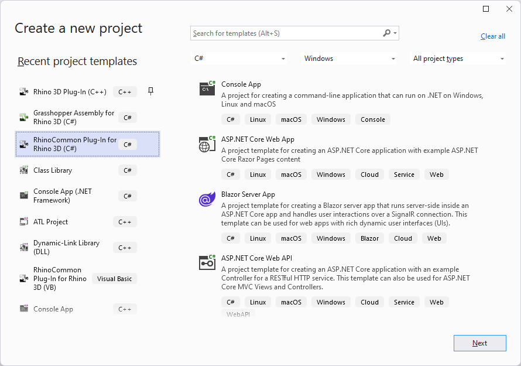
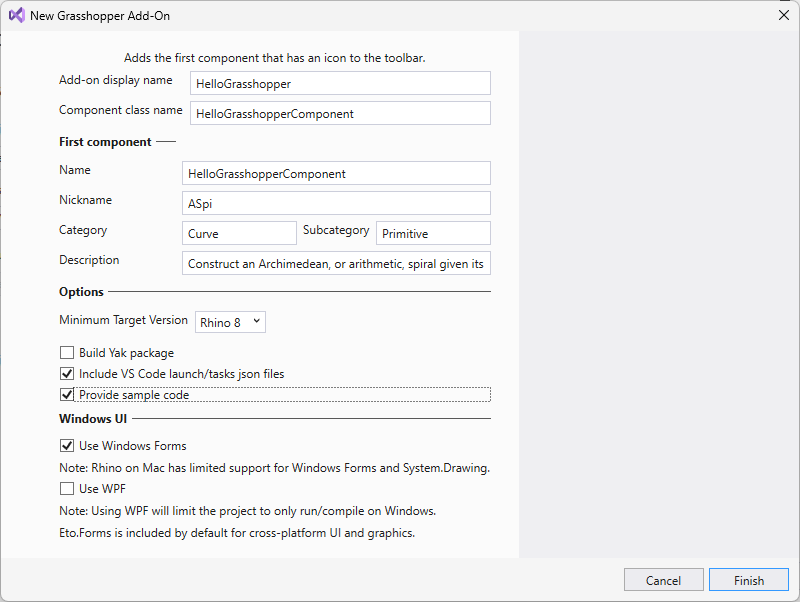
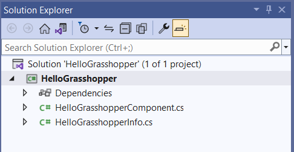
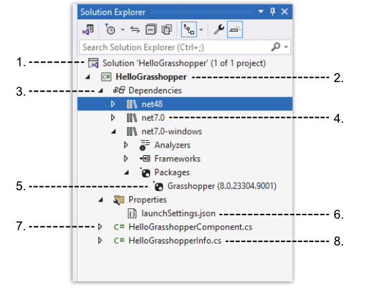
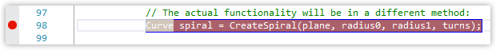
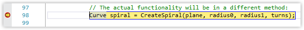
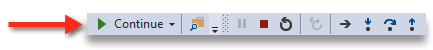

It is presumed you already have the necessary tools installed and are ready to go. If you are not there yet, see Installing Tools (Windows).
HelloGrasshopper
We will use the Grasshopper Assembly templates to create a new, basic, component library called HelloGrasshopper.
If you are familiar with Visual Studio, these step-by-step instructions may be overly detailed for you. The executive summary: create a new project using the Grasshopper Assembly template, build and run, and then make a change.
We are presuming you have never used Visual Studio before, so we’ll go through this one step at a time.
File New
- If you have not done so already, launch Visual Studio (for the purposes of this guide, we are using Visual Studio Community Edition and C#).
- Navigate to File > New > Project…

- A Create a new project wizard should appear. In the Search for templates area, search for
Grasshopperto filter the results. Find and select the Grasshopper Assembly for Rhino (C#) entry and click Next. - For the purposes of this Guide, we will name our demo plugin HelloGrasshopper. In the Configure your new project dialog, fill in the Project name field. Browse and select a location for this project on your disk, then click Next
- The New Grasshopper Add-On dialog appears. Check the Provide sample code checkbox.

- This is where you fill out information about your first component:
- Add-on display name: the name of component library itself.
- Name: the name of the component as displayed in the ribbon bar and search menus.
- Nickname: the default name of the component when inserted into the canvas.
- Category: name of tab where component icon will be shown.
- Subcategory: name of group inside tab where icon will be shown.
- Description: description shown in tooltip when mouse is over the component icon in the menu.
- For the purposes of this guide, let’s chek the “Provide Sample Code”, and then click Finish…
- A new solution called HelloGrasshopper should open…

Boilerplate Build
- Before we do anything, let’s build and run HelloGrasshopper to make sure everything is working as expected. We’ll just build the boilerplate Plugin template. Click Start (play) button in toolbar corner of Visual Studio (or press F5) to Start Debugging…

- Rhinoceros launches and a moment later, so will Grasshopper.
- Navigate to Curve > Primitive in the components menus. You should see HelloGrasshopper in the list with a blank icon. Drag this onto the canvas. The component will run and some interesting Geometry will appear in the Rhino Viewport.
- Exit Rhinoceros. This stops the session. Go back to Visual Studio. Let’s take a look at the…
Component Anatomy
-
Use the Solution Explorer to expand the Solution (.sln) so that it looks like this…

NOTE: Depending on your edition of Visual Studio, it may look slightly different.
-
The HelloGrasshopper project (.csproj) has the same name as its parent solution…this is the project that was created for us by the Grasshopper Assembly template wizard earlier.
-
Dependencies: Just as with most projects, you will be referencing other libraries. The Grasshopper Assembly template added the necessary dependencies to create a custom Grasshopper component.
-
Framework Targets - The Grasshopper Assembly template is multi-targeted so that the correct assemblies are loaded for the correct platforms.
-
Grasshopper - The referenced Grasshopper Nuget.
-
Properties contains the launchSettings.json file. This file contains all of the debug.
-
HelloGrasshopperInfo.cs contains the component library information, such as the name, icon, etc.
-
HelloGrasshopperComponent.cs is where the action is. Let’s take a look at this file…
Make Changes
-
Open HelloGrasshopperComponent.cs in Visual Studio’s Source Editor (if it isn’t already).
-
Notice that
HelloGrasshopperComponentinherits fromGH_Component…public class HelloGrasshopperComponent : GH_Component -
If you hover over
GH_Componentyou will notice this is actuallyGrasshopper.Kernel.GH_Component. -
HelloGrasshopperComponentalso overrides two methods for determining the input and output parameters …
protected override void RegisterInputParams(GH_Component.GH_InputParamManager pManager)
...
protected override void RegisterOutputParams(GH_Component.GH_OutputParamManager pManager)
- The actual work done by the component is to be found in the
SolveInstancemethod…
protected override void SolveInstance(IGH_DataAccess DA)
- As you can see, this is where the action happens. This boilerplate component creates a spiral on a plane. Just to make sure everything is working, let’s change the default plane on which the spiral is constructed. On line1 67, in
SolveInstance, notice that an XY plane is constructed…
Plane plane = Plane.WorldXY;
- Further down in the
SolveInstancemethod, you will notice that the input data is being fed into this plane…
if (!DA.GetData(0, ref plane)) return;
- Go back to the
RegisterInputParams, and find the line where the Plane input is registered. The last argument being fed to the method -Plane.WorldXY- is the default value of the input…
pManager.AddPlaneParameter("Plane", "P", "Base plane for spiral", GH_ParamAccess.item, Plane.WorldXY);
- Change the default value of the Plane input to be
Plane.WorldYZ…
pManager.AddPlaneParameter("Plane", "P", "Base plane for spiral", GH_ParamAccess.item, Plane.WorldYZ);
- Now let’s examine what happens when inputs are given to this component…
Debugging
- Set a breakpoint on line1 99 of HelloGrasshopperComponent.cs. You set breakpoints in Visual Studio by clicking in the gutter…

- Build and Run.
- In Grasshopper, place a HelloGrasshopper component on the canvas…as soon as you do, you should hit your breakpoint and pause…

- The reason you hit the breakpoint is because the
SolveInstancemethod was called once initially when the component was placed on the canvas. With Rhino and Grasshopper paused, in Visual Studio switch to the Autos tab (if it not already there). In the list, find theplaneobject. Ourplaneis aRhino.Geometry.Planewith a value of{Origin=0,0,0 XAxis=0,1,0, YAxis=0,0,1, ZAxis=1,0,0}…an YZ plane, the default, as expected. - Continue in Grasshopper by pressing the Continue button in the upper menu of Visual Studio (or press F5)…

- Control is passed back to Grasshopper and the spiral draws in the Rhino viewport. Now, place an XY Plane component on the canvas and feed it as an input into HelloGrasshopper’s Plane input. Notice you hit your breakpoint again, because the
SolveInstanceis being called now that the input values have changed. - Exit Grasshopper and Rhino or Stop the debugging session.
- Remove the breakpoint you created above by clicking on it in the gutter.
DONE!
Congratulations! You have just built your first Grasshopper component for Rhino for Windows. Now what?
Next Steps
You’ve built a component library from boilerplate code, but what about putting together a new simple component “from scratch” and adding it to your project? (Component libraries are made up of multiple components after all). Next, check out the Simple Component guide.
Try debugging your new grasshopper plugin on Mac, all plugins using the new templates are now cross-platform by default.
Related topics
Footnotes